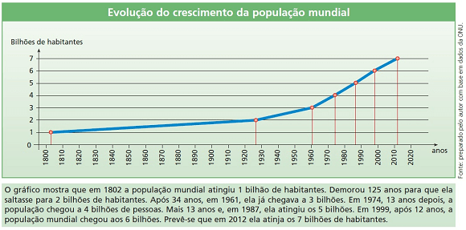
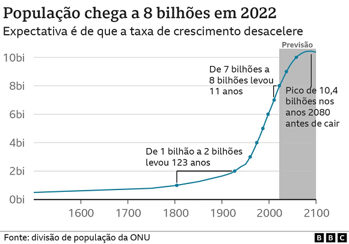
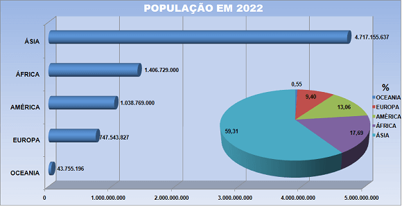
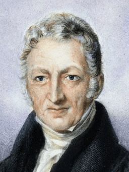
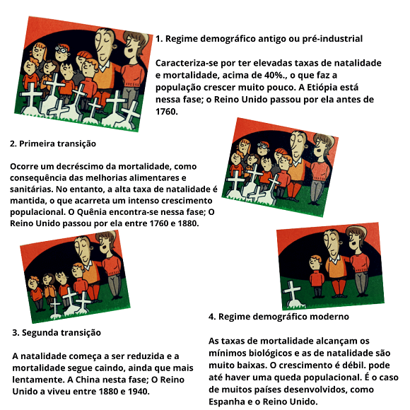
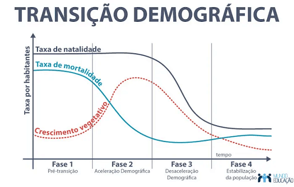
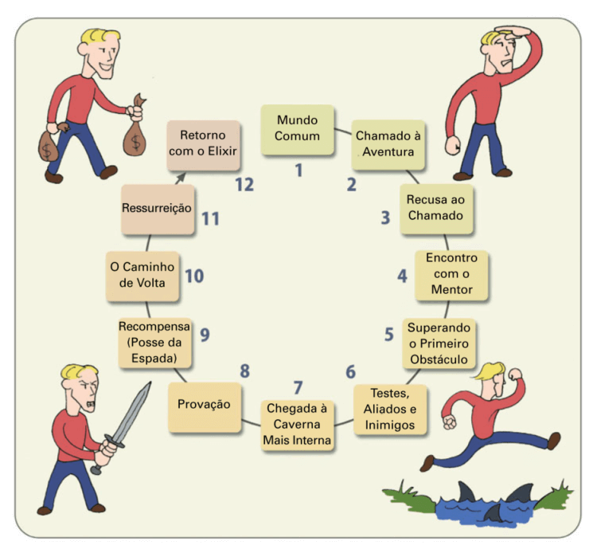

Conteúdo: Conceito de demografia: taxas de mortalidade, natalidade e fecundidade. Transição
demográfica. Estrutura etária. Teorias populacionais e mudanças socioeconômicas.
Objetivo: Entender e aplicar os principais conceitos da demografia: taxas de mortalidade,
natalidade e fecundidade, transição demográfica, teorias demográficas e estrutura da população.
Digite seu nome
Introdução
Na aula passada conhecemos a arquitetura da globalização e uma visão
atual sobre a dinâmica do mundo.
Nesta aula, veremos como a população mundial se movimenta e quais são as principais questões envolvendo sua
distribuição pelo globo terrestre.
A compreensão das dinâmicas populacionais é um pilar essencial para desvendar os desafios e oportunidades que
moldam o nosso mundo.
Evolução da População Mundial: Uma Jornada de Transformação
Um Crescimento Lento
Até o século XVIII, nosso planeta abrigava aproximadamente 1 bilhão de pessoas. Imagine, esse era o total da
população global! A jornada da humanidade estava apenas começando, e o crescimento era devagar. Fatores como
doenças e condições precárias limitavam nosso avanço.
No início, a humanidade enfrentava um mundo desafiador. Doenças e dificuldades na obtenção de recursos
limitavam nossa expansão. As sociedades dependiam principalmente da agricultura para sobreviver, o que
controlava nosso crescimento. Era uma fase inicial da jornada, cheia de obstáculos.

Revolução Demográfica
No entanto, à medida que avançamos na jornada, o cenário começou a mudar. No final do século XVIII, ocorreu
o que chamamos de "Revolução Demográfica". Melhorias na higiene, cuidados médicos e saneamento começaram a
reduzir drasticamente as taxas de mortalidade. Um salto significativo nesse cenário estava acontecendo.
Imagine que as sociedades descobriram maneiras de superar as barreiras. A Revolução Demográfica trouxe
avanços em saúde e higiene, levando a uma queda nas mortes. Começamos a viver mais e prosperar. Era como se
tivéssemos encontrado aliados valiosos nesse percurso.
Explosão Demográfica
Ao longo do século XX, demos um passo gigante. As taxas de natalidade permaneceram altas enquanto as de
mortalidade caíam. Isso resultou na explosão demográfica. Nessa etapa estava em pleno vapor, mas as mudanças
estavam à vista. À medida que as sociedades se industrializavam, a forma como vivíamos começou a evoluir.
E um período mais recente, testemunhamos um crescimento acelerado. A explosão demográfica nos fez crescer
rapidamente, com avanços médicos e melhorias na alimentação. Parecia que estávamos em um período de grande
prosperidade. No entanto, essas mudanças começaram a nos fazer questionar o que vinha a seguir.
Perspectivas para o Futuro
Agora, olhamos para o horizonte futuro. A jornada continua, mas de maneira diferente. As taxas de
crescimento diminuíram, e muitos países estão entrando em uma nova fase. A população global ainda crescerá,
mas em um ritmo mais tranquilo. O envelhecimento, a migração e a distribuição geográfica estão entre os
desafios que enfrentamos.

Hoje, contemplamos o que está por vir. O século XX nos trouxe a um momento de reflexão. À medida que a
população mundial avança, entramos em uma fase de transformação. A velocidade diminuiu, mas novos desafios
surgiram. Algumas regiões enfrentam o envelhecimento, enquanto outras lidam com altas taxas de natalidade. A
migração continua a moldar nossas trajetórias. Em meio a tudo isso, estamos em busca de soluções para
garantir um futuro equilibrado e sustentável para todos nós. Veja como está a distribuição da população
pelos continentes.

Desvendando o Crescimento da População: Explorando os Indicadores Demográficos
Adentrar o universo da demografia é como abrir um intrigante livro que conta a história da humanidade por
meio de números e tendências. Nesta jornada, nos propomos a compreender como o crescimento populacional é
medido (veja
as taxas demográficos) e o que esses números podem nos revelar sobre sociedades e culturas. Vamos
explorar os conceitos de natalidade, mortalidade e fecundidade, descobrindo os segredos que eles escondem.
×
Taxas demográficas:
Para comparar região diferentes, foram criadas fórmulas ou taxas:
Taxa bruta de natalidade (TBN). Número de nascimentos por 1.000 habitantes
em uma ano.
TBN = nº de nascidos x 1.00
nº de habitantes
Taxa bruta de mortalidade (TBM). Número de falecimentos por 1.000
habitantes em uma ano.
TBN = nº de falecidos x 1.00
nº de habitantes
Taxa de crescimento vegetativo (TCV). Relação entre o número de nascimentos
e de falecimentos em uma população em um ano.
TBN = nº de nascidos – nº de falecidos x 1.00
população total
Taxa de mortalidade infantil (TMI). É o número de crianças por 1.000 bebês
que nascem em um ano e que morrem antes de completar um ano de idade
TBN = nº de falecidos menores de um ano x 1.000
nº de nascidos vivos em um ano
Taxa bruta de natalidade (TBN). Número de nascimentos por 1.000 habitantes
em uma ano.
TBN = nº de nascidos x 1.00
nº de habitantes
Se você não sabia, agora já sabe!
Disparidades demográficas
Apesar das melhorias em saúde e saneamento, a cada ano uma criança africana ainda tem 13 vezes mais
probabilidade de morrer do que uma criança da Europa ou da América do Norte.
Na África, a taxa de mortalidade reduziu-se à metade desde 1950, o que demostra que os programas de saúde
materna e infantil realmente funcionam.
A taxa de fecundidade média do planeta, que em 1950 era de 5 filhos por mulher, passou a 4 em 1975 e a
2,8 em 2003 e para 2,3 nascimentos por mulher em 2020. E a tendência segue em queda. Fonte: Banco
Mundial.
Natalidade, Mortalidade e Fecundidade
Comecemos pelo primeiro indicador: natalidade. Este termo refere-se à taxa de nascimentos
em uma determinada população durante um período específico. Em essência, é o índice que nos mostra quantos
novos indivíduos estão chegando ao mundo. Mas a natalidade é apenas uma peça do quebra-cabeça demográfico.
A fecundidade, por sua vez, está ligada à capacidade reprodutiva das mulheres. Trata-se da
taxa de filhos que uma mulher média teria ao longo de sua vida, considerando as condições específicas de um
determinado local e período. Esta é uma janela para entender como fatores como educação, acesso a métodos
contraceptivos e dinâmicas sociais influenciam as escolhas familiares.
No entanto, a narrativa demográfica não seria completa sem a mortalidade. A mortalidade, em
termos populacionais, envolve a quantidade de óbitos em uma população durante um certo período. Essa taxa
pode nos revelar não apenas a qualidade dos sistemas de saúde e segurança, mas também aspectos culturais e
socioeconômicos que afetam a longevidade.
Curiosidade sobre Thomas Robert Malthus: A Teoria da População em Debate

Thomas
Robert Malthus, um economista e demógrafo britânico do século XVIII, entrou para a história com sua
teoria pioneira sobre o crescimento populacional. Ele ficou conhecido por sua visão sombria, que
alertava sobre a possibilidade de que a população poderia crescer mais rápido do que a capacidade de
produção de alimentos, levando a um colapso social.
A teoria de Malthus, muitas vezes chamada de "teoria malthusiana", sugeria que o crescimento populacional
tendia a aumentar de maneira exponencial, enquanto a produção de alimentos crescia em um ritmo mais
lento, de forma linear. Ele argumentava que a escassez resultante de alimentos levaria a crises, fome e
morte, agindo como um mecanismo de controle populacional.
Apesar de sua teoria ter gerado debates e reflexões profundas sobre o equilíbrio entre população e
recursos, Malthus também recebeu críticas significativas. Alguns argumentavam que ele subestimava a
capacidade da humanidade de inovar e desenvolver tecnologias agrícolas mais eficientes, o que poderia
aumentar a produção de alimentos. Além disso, suas previsões sombrias não se concretizaram da maneira
como ele havia previsto, em parte devido aos avanços tecnológicos e mudanças sociais que ocorreram desde
a sua época.
A Mortalidade em Foco
À medida que nossos passos nos levam mais longe, observamos a mortalidade em uma escala global. Aqui, as
taxas de mortalidade podem variar drasticamente de região para região. O que causa essas discrepâncias
impressionantes? Como fatores históricos, econômicos e geográficos se entrelaçam para moldar os destinos das
nações?
No centro desse cenário, está a mortalidade infantil, um ponto crítico em nossa exploração. Essa medida
revela quantos bebês não sobrevivem até o primeiro ano de vida em um determinado local e tempo. Ao
examinarmos essa estatística, somos levados a questionar: quais são os principais determinantes da
mortalidade infantil? Que medidas estão sendo tomadas para proteger essas vidas frágeis?
Esperança de Vida ao Nascer
Imagine ser capaz de prever a duração de sua própria vida. A esperança de vida ao nascer é como uma lente
através da qual podemos vislumbrar o futuro coletivo de uma população. Essa medida, simples em sua
definição, carrega consigo nuances complexas que conectam saúde, qualidade de vida e avanços médicos.
A esperança de vida ao nascer é a média de anos que se espera que um recém-nascido viva em uma determinada
região e período. Parece uma simples estatística, mas suas ramificações são profundas. Ela nos coloca frente
a frente com as conquistas em saúde pública, o acesso a cuidados médicos e os desafios que enfrentamos como
sociedade para garantir um futuro mais longo e saudável.
Considere isto: como a esperança de vida ao nascer muda ao redor do mundo? Que fatores, desde os avanços
médicos até as desigualdades socioeconômicas, influenciam esse número? Através dessa reflexão, vemos um
paralelo com a Jornada do Herói, onde o protagonista luta para superar obstáculos e emergir mais forte.
Crescimento Vegetativo e Crescimento Real
O palco agora se volta para as mudanças demográficas, personificado no conceito de crescimento vegetativo.
Esta é a diferença entre as taxas de natalidade e mortalidade em uma população. Quando a natalidade supera a
mortalidade, ocorre um crescimento vegetativo positivo - a população cresce. No entanto, quando a
mortalidade é maior que a natalidade, há um crescimento vegetativo negativo, sinalizando uma diminuição da
população.
Mas nosso enredo não para por aí. A entrada e saída de indivíduos, conhecidas como imigração e emigração,
influenciam dramaticamente o crescimento real de uma população. Isso nos leva a uma interseção curiosa: como
a busca por oportunidades, segurança e uma vida melhor orienta as decisões de migrar? Será que essa busca
ecoa as etapas da Jornada do Herói, onde um indivíduo se aventura em territórios desconhecidos?
Imigração e Emigração
A imigração, como uma parte essencial da narrativa populacional, é a chegada de pessoas a um país ou região
que não é sua terra natal. Isso pode ser impulsionado por uma gama de motivos, desde a busca por emprego até
a fuga de conflitos. A imigração pode enriquecer culturas e impulsionar economias, mas também pode trazer
desafios de integração e diversidade.
Em contrapartida, a emigração é a partida de pessoas de um local para buscar uma vida melhor em outro. Essa
busca pode estar alinhada com a ideia de que um novo lugar pode oferecer novas oportunidades e um recomeço.
Como os desafios enfrentados por migrantes refletem as provações do herói mítico? Como as histórias
individuais se entrelaçam com o tecido social das nações?
Modelos de Crescimento Demográfico
Imagine a população como um oceano em constante movimento, ondas que sobem e descem. Estas são as ondas do
crescimento demográfico, um fenômeno que molda a paisagem humana. Nossa jornada agora nos leva a explorar os
modelos de crescimento, os padrões desiguais que abraçam nosso planeta e a transição demográfica que marca o
amanhecer de novas eras.
Existem diversos modelos que ajudam a descrever o crescimento populacional. Um deles é o crescimento
exponencial, onde a população aumenta de maneira constante em uma taxa fixa. Essa é uma representação
inicial, mas logo encontramos o crescimento logístico, que leva em consideração limitações de recursos e
ambiente, desacelerando o crescimento à medida que a capacidade de suporte é atingida.

Mas nosso encontro com os modelos não é apenas matemático. Eles refletem histórias humanas: como a busca por
recursos, os avanços tecnológicos e os desafios ambientais interagem para moldar o crescimento. Nesse
sentido, esses modelos ressoam com as etapas da Jornada do Herói, onde o protagonista enfrenta obstáculos e
aprendizados.
O Ritmo Diferenciado do Crescimento
Enquanto a população mundial é um tecido interconectado, a tessitura é marcadamente desigual. O crescimento
populacional não ocorre uniformemente em todas as regiões. Alguns lugares testemunham um crescimento lento,
enquanto outros experimentam um florescer exuberante.
Em nosso conto demográfico, os países desenvolvidos assumem um papel. Com acesso a recursos, educação e
cuidados de saúde, essas nações testemunham um crescimento mais lento, refletindo um estado de estabilidade.
Por outro lado, os países subdesenvolvidos, lutando contra a pobreza, doenças e acesso limitado, enfrentam
um crescimento rápido. Aqui, vemos uma paralelo com a Jornada do Herói, onde alguns heróis enfrentam
desafios maiores e triunfos são mais difíceis de alcançar.
A transição demográfica é um capítulo fascinante de nossa saga. Ela narra a metamorfose de sociedades
agrárias para industrializadas e pós-industrializadas. Começamos com altas taxas de natalidade e
mortalidade, mas à medida que o progresso entra em cena, as taxas de mortalidade caem primeiro. Aqui, o
espelho da Jornada do Herói surge novamente - a superação de desafios, o encontro de aliados (neste caso,
avanços médicos) e a transformação.
O próximo ato desta transição é a queda das taxas de natalidade. As famílias se tornam menores, a educação é
valorizada e os direitos das mulheres são reconhecidos. Este é o eco da jornada do herói, onde a sabedoria é
adquirida e novos paradigmas emergem.

Fonte: Organizado pelo autor.
Um Mundo em Envelhecimento
Hoje, exploramos as páginas da história demográfica e observamos como os capítulos se desenrolam, revelando
um mundo em constante metamorfose. Da transição demográfica ao desequilíbrio de gênero, das nuances da
estrutura econômica à desigual distribuição populacional, nossa jornada nos trouxe compreensão sobre os
fatores que moldam a sociedade e a vida em nosso planeta.
Nosso planeta passa por um processo notável - o envelhecimento. Como heróis de uma narrativa épica, cada
geração traz consigo sabedoria acumulada ao longo dos anos. Conforme a expectativa de vida aumenta, vemos
uma nova realidade: uma população que envelhece. Isso nos lembra da passagem do tempo, das histórias que
viveram e das contribuições que ainda podem fazer. Como uma jornada do herói, essa fase traz reflexões sobre
legados e a importância de cada capítulo da vida.
Na dança demográfica, os gêneros às vezes giram em desequilíbrio. Muitas vezes, a balança entre a população
masculina e feminina oscila devido a uma série de fatores, que ecoam a busca do herói por equilíbrio e
harmonia em sua jornada.
Além disso, a estrutura econômica é como o tecido que mantém a sociedade unida. A população ativa, engajada
em atividades produtivas, cria a base da economia e sustenta o progresso. Por outro lado, a população
inativa, incluindo jovens e idosos, completa o quadro da vida, lembrando-nos de que cada fase tem seu
próprio valor e papel.
Fatores da Distribuição Populacional
A distribuição populacional é como a maré que molda a paisagem. A água, que dá vida a muitos lugares, atrai
populações costeiras. Vales férteis são como oásis que abraçam a vida humana, enquanto recursos preciosos
são faróis para assentamentos. Planícies vastas convidam ao estabelecimento, enquanto climas amigáveis são
como calorosas boas-vindas.
Assim, terminamos nossa jornada demográfica, mas nossa exploração não cessa. Como heróis modernos,
continuamos a trilhar caminhos desconhecidos, enfrentando desafios e descobrindo novas histórias no cenário
em constante mudança da população mundial.
Teste seu conhecimento
Qual foi o impacto da Revolução Demográfica no crescimento populacional?
Teste seu conhecimento
O que descreve a transição demográfica?
Teste seu conhecimento
O que é esperança de vida ao nascer?
Ao encorajar perguntas, estamos fortalecendo o espírito investigativo e crítico dos
indivíduos, promovendo o pensamento autônomo e a busca constante por respostas e soluções.
P:
Por que em alguns lugares têm mais gente do que outros? Tipo, a Ásia é superpopulosa, enquanto a
Antártica quase não tem ninguém. Por que será que isso acontece?
R:
Boa pergunta! É bem curioso como a população é distribuída pelo mundo. A Ásia realmente se destaca,
sendo o continente mais populoso, com bilhões de pessoas! Isso tem a ver com vários fatores, como
recursos naturais, climas favoráveis em algumas regiões e tradições culturais. Por outro lado, a
Antártica é um caso especial. Ela é supergelada e não oferece condições de vida estáveis para a maioria
das pessoas. Além disso, tem um tratado internacional que restringe a ocupação humana para fins
científicos. É interessante pensar como esses fatores moldam a maneira como a população é distribuída
pelos continentes.
P:
Eu estava lendo sobre algo chamado "transição demográfica". Parece que as populações mudam muito com
o tempo. O que exatamente é essa transição e o que ela nos diz sobre as sociedades?
R:
A transição demográfica é uma viagem incrível no tempo das populações. Ela mostra como as taxas de
natalidade e mortalidade se transformam à medida que as sociedades evoluem. Sabe aquela época em que as
populações cresciam devagar por causa de doenças e condições precárias? Então, isso é o início da
transição. Conforme as nações se desenvolvem, melhoram a saúde, a higiene e a educação, a mortalidade
cai, fazendo a população crescer mais rápido. E aí, com mais acesso a informações e opções de vida, as
famílias têm menos filhos, levando a um crescimento mais controlado. É como uma história emocionante que
as sociedades passam, enfrentando desafios e encontrando soluções para crescer de maneira mais
equilibrada.
P:
Quais as consequências do envelhecimento da população? Por que isso está acontecendo? E quais as
consequências disso?
R:
O envelhecimento da população é algo que está chamando bastante atenção! É bem interessante como isso
acontece. Com o avanço da medicina e melhores condições de vida, as pessoas estão vivendo mais. E isso é
ótimo, certo? Só que tem um efeito colateral curioso: a proporção de pessoas idosas está aumentando.
Isso acontece porque as taxas de natalidade estão diminuindo em muitos lugares, então temos mais pessoas
vivendo por mais tempo. Isso pode afetar a economia, a seguridade social e até mesmo a dinâmica das
famílias. Imagina, é como se tivéssemos que repensar algumas coisas para garantir que as pessoas idosas
tenham qualidade de vida, já que elas serão uma parte cada vez mais importante da população.
Desafio em grupo: Exposição de ideias sobre a jornada do herói.
Você conhece a Jordana do Herói? Tenho certeza que já assistiu inúmeros filmes e jogou diversos
jogos com
essa forma de contar histórias.
Trata de um padrão narrativo que está presente em Star Wars ou Harry Potter por exemplo. O herói
deve deixar
sua comunidade e partir em uma jornada perigosa, geralmente para recuperar algo (ou alguém) valioso.
Comente com seu professor(a) de língua portuguesa sobre o livro: O Herói de Mil Faces de Joseph
Campbell e
sobre A Jornada do Escritor de Christopher Vogler. Neste último está descrito os passos para
desenvolver
qualquer história, seja para games, filmes ou quadrinhos.
Instruções
Com seu grupo da aula anterior, vamos discutir os passos para elaborarmos a história do nosso
jogo
sobre a Geografia do mundo atuall. Nas próximas aulas vamos nos aprofundar nesses tópicos:
Leia os passos sobre a jornada do herói abaixo e reflita sobre algum game ou filme em que
vislumbrou alguns desses passos;
Anote algumas ideias no caderno sobre o jogo que iremos desenvolver com sua turma. Não se
preocupe com correções nesse momento, deixe sua criatividade aflorar;
Apresente para a turma algumas de possíveis ideias para o jogo;
Tempo de atividade 25 minutos.
A Jornada do Herói

1. Mundo Comum do herói é estabelecido. Sua vida cotidiana e seu ambiente são
introduzidos. No Final Fantasy, a alusão ao mundo comum aparece na frase de abertura: “Era um dia
como outro qualquer”.
2. Chamado à Aventura: O herói conhece um mundo alternativo e é chamado a partir em
uma busca ou jornada. Nessa seção, o mundo alternativo, ou especial, é apresentado ao personagem
principal. Normalmente, há alguma espécie de intersecção de elementos do mundo alternativo com o
mundo comum e o personagem principal é chamado a ingressar nessa realidade alternativa e embarcar em
uma busca ou jornada.
3. Recusa ao Chamado O chamado é rejeitado porque o herói não está disposto a
sacrificar sua vida confortável e seu ambiente familiar. O herói, porém, sente‑se desconfortável com
essa recusa.
4. Encontro com o Mentor: O herói recebe informações que são relevantes para a busca
e para a sua necessidade pessoal de partir nessa jornada.
5. Superando o Primeiro Obstáculo: O herói abandonou sua recusa inicial por causa
das informações recebidas. O herói embarca na jornada, aceita a aventura e ingressa no mundo
especial. Essa seção geralmente corresponde ao final do Ato I em uma narrativa tradicional.
6. Testes, Aliados e Inimigos A determinação do herói é testada por meio de uma
série de desafios. Durante esse período, o herói encontra aliados e inimigos. Essa etapa constitui a
ação principal da maioria das narrativas. É quando o herói precisa solucionar problemas, enfrentar
seus temores, salvar outras pessoas e derrotar inimigos. Essa seção normalmente corresponde ao
início do Ato II em uma história.
7. Chegada à Caverna Mais Interna Mais testes e um período de
supremo fascínio ou terror.. A provação começa a ser preparada.
8. Provação: O herói enfrenta seu maior desafio até aqui. Ele deve derrotar o
“grande” vilão. Nessa fase, o herói mostra vulnerabilidade (por exemplo, Super‑Homem e kriptonita),
e não está claro se vencerá ou fracassará.
9. Recompensa (Posse da Espada) Parece ser o fim da história, mas não é! Essa seção
corresponde ao final do Ato II da história.
10. O Caminho de Volta Quando a provação termina, o herói pode optar entre
permanecer no mundo especial ou voltar ao mundo comum. Na maioria dos casos, ele decide regressar.
Essa seção corresponde ao início do Ato III da história.
11. Ressurreição: O herói deve enfrentar a morte mais uma vez, em outra provação,
que é conhecida como o clímax. É aqui que o herói mostra que foi transformado pela jornada e
ressuscitou como uma pessoa plenamente formada. Durante essa etapa, o vilão pode ressurgir
repentinamente. (Nos filmes de terror, é o momento em que a plateia grita para o personagem
principal: “Olhe para trás! Ele ainda não está morto!”) É também onde o narrador pode incluir um
“final surpresa” inesperado. Talvez o vilão não seja realmente um vilão. Talvez o mentor seja um
impostor. (Yoda poderia ser mau? Hummm...).
12. Retorno com o Elixir: O herói finalmente volta para casa, mas a experiência o
alterou irremediavelmente. Se agora é um herói, ele traz consigo um elixir do mundo especial que
ajudará aqueles que ele havia originalmente deixado para trás. A estrutura é circular, com o herói
voltando ao princípio. Isso facilita a comparação entre o “antes” e o “depois” pela audiência para
perceber como o herói foi transformado. A estrutura circular também permite deixar o final em
aberto. O herói será convocado novamente no futuro? O inimigo foi realmente derrotado? Há outra
ameaça no horizonte? O herói conseguirá descansar algum dia? Deixar perguntas como essas em aberto —
em vez de optar por um final em que tudo se esclarece — intriga a audiência e cria espaço para uma
continuação. E se o herói fosse transportado inesperadamente de volta para o mundo artificial bem no
final da história? O personagem principal do filme De Volta para o Futuro, Marty McFly, descobre no
final que sua jornada ao passado alterou substancialmente o futuro.
Ele deve atender a um novo chamado e viajar para o futuro para salvar sua família do desastre. Na
reviravolta de último minuto do enredo de Half‑Life, o personagem principal, Gordon Freeman, está
prestes a escapar quando é abordado pelo “homem de preto”, que lhe propõe uma difícil escolha.
CANDELORI, Roberto. Enciclopédia do Estudante: geografia geral. São Paulo: Moderna, 2008.
SANTOS, Milton. O espaço do cidadão. São Paulo: Editora da Universidade de São
VOGLER, Christopher. A jornada do escritor: estruturas míticas para escritores.
Tradução de Ana Maria Machado. 2.ed. Rio de Janeiro: Nova Fronteira, 2006.
SKOLNICK, Evan. Video game storytelling: what every developer needs to know about
narrative techniques.New Yoirk: Watson-Guptill, 2014.